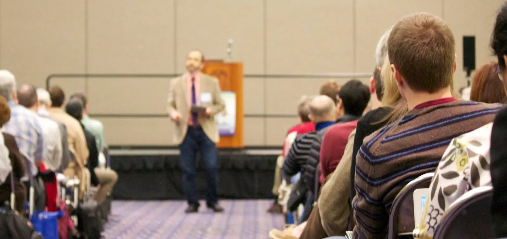

Talks & interviews
I enjoy speaking with broad audiences about what mathematics is and why it belongs to everyone — public lectures, smaller gatherings, and teacher professional development. A few samples are below.
Why mathematics can feel exclusive
A clip on how the community of mathematicians can be exclusive, even when we don't want it to be. Part of a profile in Quanta Magazine.
Five minutes on math for everyone
The challenge: a five-minute talk about math for a general audience. I chose themes from my book. At PBK's EnLighting Talks, Los Angeles.
Discover your humanity through math
A conversation on TED's How to Be a Better Human about finding beauty, meaning, and joy in math.
Why should we do mathematics?
Recorded for the Australian Academy of Science during my 2024 sabbatical in Sydney. Sorry my hair was a mess, it was windy that day!
Speaking
I take on a limited number of engagements a year so that I can protect time for family and teaching. Inquiries 6-8 months in advance are especially helpful. Please tell me about your audience, the occasion, and your hoped-for timing.